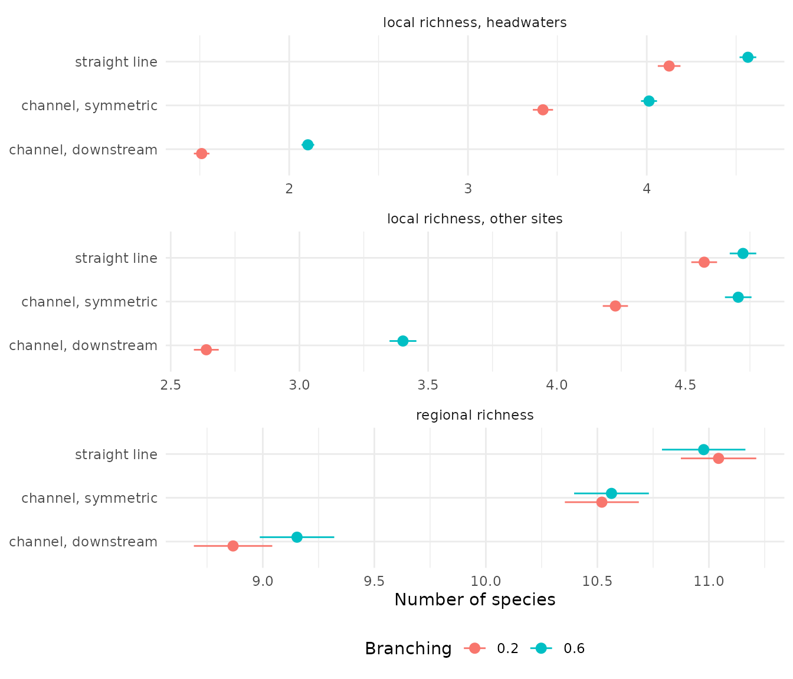
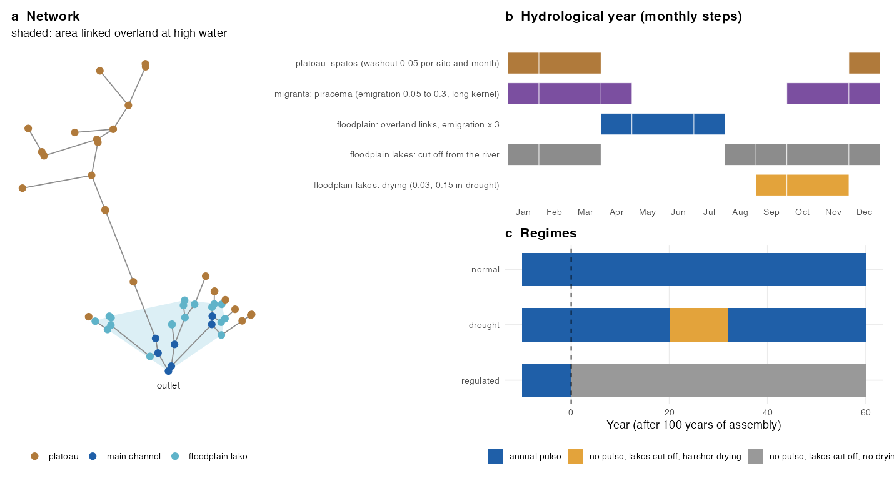
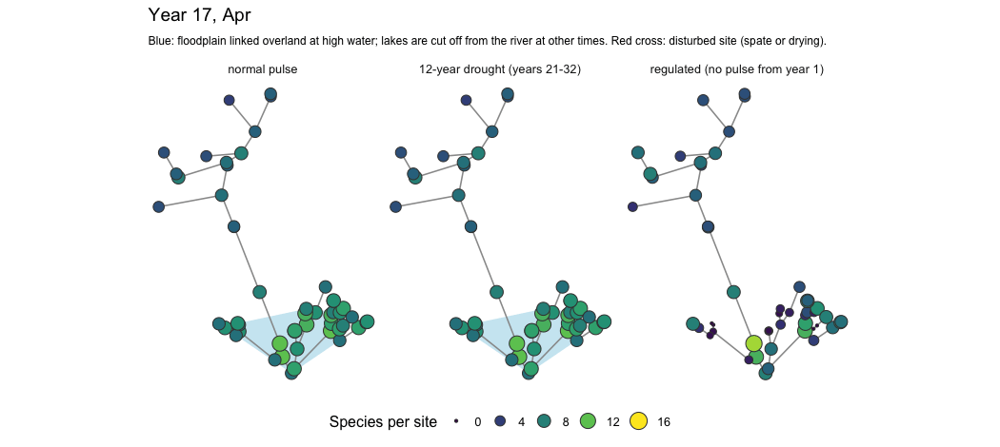
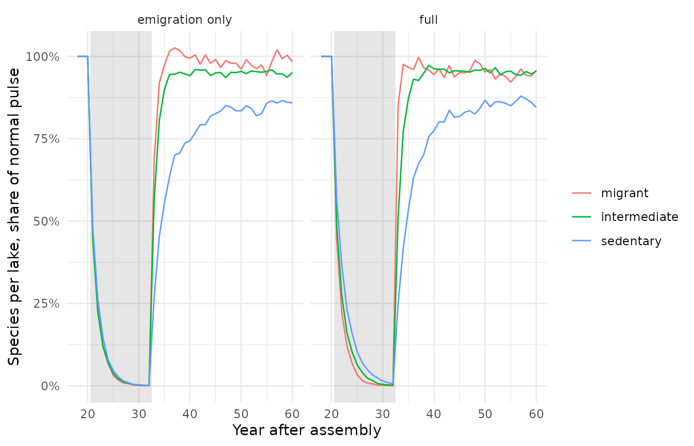
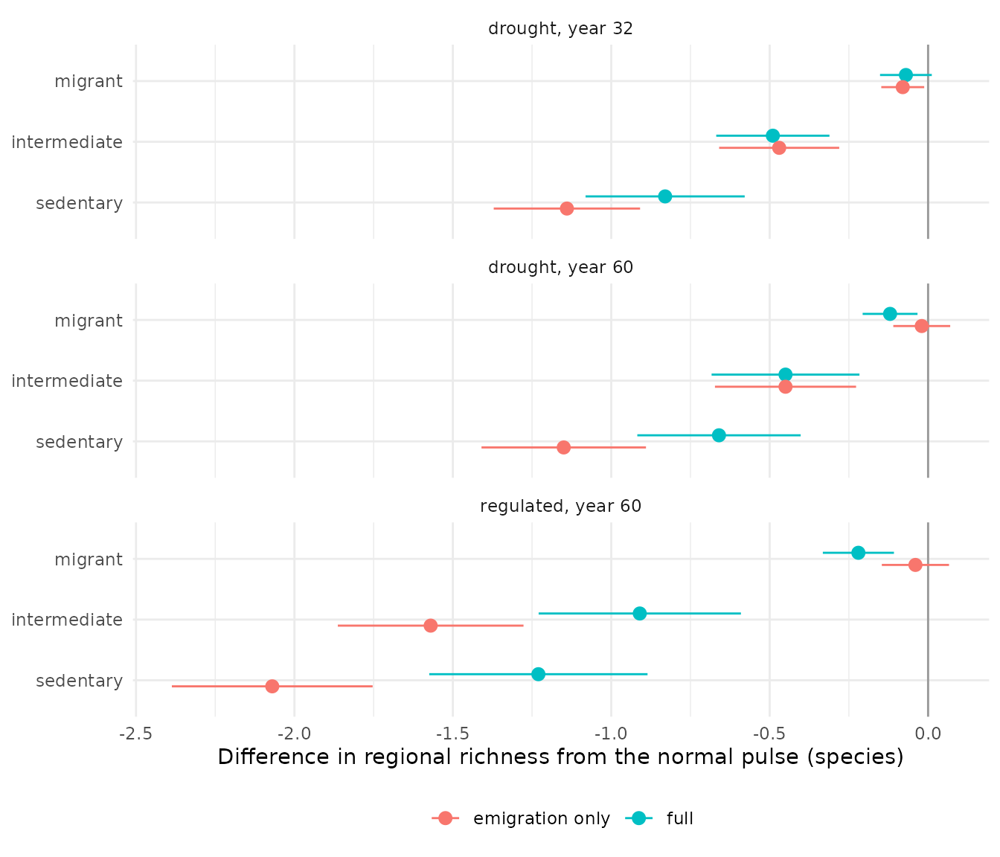

Persistence in river networks under a flood pulse
Source:vignettes/articles/river-persistence.Rmd
river-persistence.Rmd
library(comdynamite)
library(ggplot2)
res <- readRDS("river-persistence.rds")Rivers are dendritic: sites are linked by a single path along the channel, flow carries organisms downstream more easily than upstream, and headwaters sit at the tips of the network, where they receive immigrants from one direction only. Experiments with protists in dendritic and lattice landscapes of the same size showed that this topology alone changes local and regional diversity (Carrara et al. 2012), and the network view of riverine metacommunities generalises this to real rivers (Altermatt 2013). Rivers also pulse. In large floodplain rivers, an annual, predictable flood links the channel with lakes and the flooded zone, whereas low-order streams receive short, unpredictable spates that follow local rains (Junk et al. 1989; Junk 2005).
This article uses the river tools of the package,
river_network(), landscape_river(),
env_river(), env_seasonal() and
river_floods(), to ask two questions about long-term
persistence. First, in a generic study, how do network topology, the
direction of dispersal and seasonal floods change regional richness and
the persistence of species? Second, in scenarios inspired by the
Pantanal, the floodplain of the upper Paraguay River, what happens to a
fish-like metacommunity when the flood pulse fails for 12 years, as in a
multiyear drought, or is removed for good, as downstream of a dam? Both
studies were run beforehand (data-raw/river_persistence.R
and data-raw/river_pantanal.R), and this article reads
their results.
The generic study
Each replicate grows a network of 50 sites with
river_network(), little branched
(branching = 0.2) or much branched (0.6). The environment
is a tail-up field along the channel (env_river()), with a
gradient from the outlet to the headwaters, slow change among years and
a seasonal cycle of larger amplitude in headwaters
(env_seasonal()). Twenty species with optima along the
gradient compete for 150 years of 20 steps each. We crossed three ways
of dispersing (along the channel with the same scale downstream and
upstream; along the channel with an upstream scale a quarter of the
downstream one; or with the same kernel on straight-line distances among
the same sites, the lattice-like control of Carrara et al. 2012) with
three flood regimes (none; washout harsher in large rivers; or harsher
in headwaters, in half of the years on average). Within a replicate, the
network, the environment and the flood years are shared by all cells, so
that the contrasts below are paired.
net <- river_network(50, branching = 0.2)
river <- landscape_river(net, scale_down = 2) # symmetric
downstream <- landscape_river(net, scale_down = 2, scale_up = 0.5) # downstream bias
rel <- net$distance / max(net$distance)
base <- env_river(river, n_steps = 2000, tail_up = c(25, 5), nugget = 2,
temporal_scale = 100, mean = 30 + 60 * rel)
env <- env_seasonal(base, period = 20, year_sd = 2,
amplitude = 2 + 6 * (1 - net$upstream_length / max(net$upstream_length)))
floods <- river_floods(river, n_steps = 2000, period = 20, size_effect = 1)
long <- rbind(
data.frame(gen[c("landscape", "branching")], response = "regional richness",
value = gen$regional_end),
data.frame(gen[c("landscape", "branching")], response = "local richness, headwaters",
value = gen$alpha_head),
data.frame(gen[c("landscape", "branching")], response = "local richness, other sites",
value = gen$alpha_other))
summ <- aggregate(value ~ landscape + branching + response, long,
function(v) c(m = mean(v), se = sd(v) / sqrt(length(v))))
summ <- data.frame(summ[1:3], summ$value)
summ$landscape <- factor(summ$landscape, c("euclidean", "river_symmetric", "river_downstream"),
c("straight line", "channel, symmetric", "channel, downstream"))
summ$landscape <- factor(summ$landscape, rev(levels(summ$landscape)))
ggplot(summ, aes(m, landscape, colour = factor(branching))) +
geom_pointrange(aes(xmin = m - 2 * se, xmax = m + 2 * se),
position = position_dodge(width = 0.4)) +
facet_wrap(~response, scales = "free_x", ncol = 1) +
labs(x = "Number of species", y = NULL, colour = "Branching") +
theme_minimal() +
theme(legend.position = "bottom")
Dispersal along the channel lowered regional richness relative to the
same kernel on straight-line distances, by -0.47 ± 0.05 species (mean ±
standard error of the paired differences), and the loss was larger in
headwaters (-0.63 ± 0.02 species per site) than at the other sites
(-0.18 ± 0.02). A downstream bias made it much worse: relative to
symmetric dispersal along the channel, regional richness fell by -1.53 ±
0.06 species and local richness in headwaters by -1.91 ± 0.02, while the
dissimilarity among headwaters rose. Headwaters seem to lose because, at
the tips of the network, they receive few immigrants, and with a
downstream bias almost none, so that a local extinction is rarely
reversed. The bias also lowered the occupancy expected from colonisation
and extirpation rates (persistence(); -0.11 ± 0.00) and
slowed turnover (tau, the log of the sum of both rates; -0.56 ±
0.01).
Floods mattered much less at the intensity simulated here. Washout harsher in large rivers lowered regional richness by -0.28 ± 0.05 species, and washout harsher in headwaters had no detectable effect (-0.02 ± 0.05). Branching changes the network itself, so it cannot be paired in the same way; more branched networks, with more than twice as many headwaters, had richer sites but about the same regional richness. In every cell regional richness only declined after assembly, so that the minimum over the run was its value at the end: the metacommunity is closed, and a species lost from the whole network never returns.
Scenarios inspired by the Pantanal
Hydrology
The Pantanal is a floodplain of about 138,000 km² between 80 and 150 m above sea level, surrounded by plateaus from 200 to 1,200 m (Alho & Silva 2012). Its rivers have a monomodal annual pulse with an amplitude of 2 to 5 m and a duration of 3 to 6 months (Harris et al. 2005). Rains from November to March flood up to 70% of the floodplain by July, and rivers withdraw from April to September; at Ladário, the mean level of the Paraguay River is lowest in November and highest in June, and from 1962 to 1973 it stayed at or below 100 cm in every year (Marengo et al. 2021). In the floodplain of the Miranda River, a dead arm is cut off in the dry season until the next flood, and a shallow pond may dry out or keep water depending on the flood of each year (Resende 2000). Junk (2005) contrasts this monomodal, predictable pulse of large tropical rivers with the polymodal, unpredictable pulse of low-order streams, and notes that the multiyear dry period of the 1960s left its mark on the vegetation of the Pantanal. Junk et al. (1989) describe the main channel as a migration route and a refuge during low water.
We translated this into monthly steps on a network of 50 sites
(data-raw/river_pantanal_setup.R). The half of the sites
nearest the outlet form the floodplain; within it, the sites of largest
Shreve magnitude are the main channel and the others are floodplain
lakes. The other half form the plateau. On the plateau, every site may
be washed out in each month from December to March (probability 0.05,
independently among sites and months). In the floodplain, from April to
July, sites are also linked overland (half of the emigrants follow a
kernel on straight-line distances among floodplain sites, through
kernels and kernel_step) and emigrate three
times more (dispersal_site). In the other months,
floodplain lakes are cut off from the river: they neither send nor
receive emigrants until the next flood, as the lakes that Junk et al.
(1989) describe as isolated for months or years and the dead arm of the
Miranda in the dry season (Resende 2000). From September to November,
lakes may also dry out (probability 0.03 per month, 0.15 during a
drought); the main channel never dries. After 100 years of assembly
under this regime, three regimes follow for 60 years: the pulse every
year (“normal”), 12 years without the pulse and with harsher drying
(years 21 to 32, “drought”), during which the lakes stay cut off, or no
pulse from the first year, with lakes cut off for good but no drying
(“regulated”).

Biota
The upper Paraguay basin holds about 340 fish species; among those
compiled by Fernando et al. (2025), 17% occur only on the plateau and
14% only in the floodplain, and richness falls from about 250 species
per altitude class below 400 m to about 100 above it. We used 40 species
with optima evenly spaced along the gradient and calibrated niche
breadth and competition so that, in a snapshot after assembly, about 20%
of the species present occurred only on the plateau and 15% only in the
floodplain. Of the 101 species caught in the floodplain of the Miranda
River, 15% are long-distance migrants, 43% are sedentary species of
lakes and 42% are intermediate (Resende & Palmeira 1999, cited by
Junk 2005; we did not see the original). We split the 40 species into
these guilds, each spread along the gradient, and let the guilds differ
in three ways, using the arguments kernel_group,
dispersal_site and
disturbance_sensitivity:
- emigration through time (
dispersal_time): migrants emigrate with probability 0.05 per month, rising to 0.3 during the upstream spawning migration from October to April (the piracema; Alho 2008), and intermediate and sedentary species with probabilities 0.03 and 0.01; - routes (
kernel_group): migrants follow a channel kernel four times longer than the other guilds, the same upstream and downstream, since the piracema is an active migration against the current, whereas the other guilds follow symmetric or downstream-biased kernels. Tagged pacu, a migratory species, travelled up to 422 km in the Paraná River, and 91% moved away from where they were released (Makrakis et al. 2007), but we found no tagging study from the Pantanal itself; - tolerance (
disturbance_sensitivity): a disturbed site loses each population with probability 1 for migrants, 0.85 for intermediate and 0.7 for sedentary species. Weighted by the guild shares, about 19% of the species survive the drying of a lake, close to the 7 of 34 species (21%) that survived in a lagoon of the middle São Francisco River left unflooded for three years, where migratory species were the most likely to disappear and most survivors could breathe air (Pompeu & Godinho 2006).
Only the order and timing of these rates, and the survival after
drying, come from the literature; their values are assumptions. To see
what the last two add, we also ran the scenarios with guilds that differ
only in emigration through time, one kernel for all and all populations
of a disturbed site lost (the “emigration only” model;
GUILD_MODEL=emigration).
The animation follows one replicate across the drought. In May, the floodplain of the normal regime is linked overland, whereas in the other two it is not; red crosses mark disturbed sites.

What the pulse does
Under the normal pulse, floodplain sites held more species at high water than at low water (10.08 against 8.18 species per site with symmetric dispersal, in years 11 to 20) and were more alike (mean Jaccard dissimilarity 0.5 against 0.61). Thus, in the model, the lateral links of high water homogenise the floodplain, and the isolation of the dry season differentiates it again. Removing the pulse for good cut the lakes off from the river. Relative to the normal pulse (paired differences, mean ± standard error), floodplain sites of the regulated regime changed by -6.08 ± 0.08 species at high water, their dissimilarity by 0.332 ± 0.006 and occupancy by -0.132 ± 0.003, and regional richness at the end of the 60 years changed by -2.16 ± 0.25 species.
lakes <- do.call(rbind, lapply(c("full", "emigration only"), function(model) {
d <- if (model == "full") pan else res$pantanal_emigration
do.call(rbind, lapply(18:60, function(y) {
cbind(series_diff(d, "lake_guild_series", "drought", y, "symmetric", relative = TRUE),
year = y, model = model)
}))
}))
lakes$guild <- factor(lakes$guild, c("migrant", "intermediate", "sedentary"))
lakes$model <- factor(lakes$model, c("emigration only", "full"))
ggplot(lakes, aes(year, mean, colour = guild)) +
annotate("rect", xmin = 20.5, xmax = 32.5, ymin = -Inf, ymax = Inf, alpha = 0.15) +
geom_line() +
facet_wrap(~model) +
scale_y_continuous(labels = function(x) paste0(round(100 * x), "%")) +
labs(x = "Year after assembly", y = "Species per lake (% of normal pulse)",
colour = NULL) +
theme_minimal() +
theme(legend.position = "bottom")
The drought emptied the lakes year after year. With symmetric dispersal, in its third year (year 23, the length of the São Francisco study), the lakes of the full model kept 12% of their migrant species, 16% of the intermediate and 23% of the sedentary ones, relative to the normal pulse, which is the ranking seen by Pompeu & Godinho (2006). In the model with guilds that differ only in emigration, the three guilds lost alike (12%, 12% and 15%), since a dried lake lost every population and no route was longer for anyone. After 12 years, both models had lost almost every species from the lakes. When the pulse returned, migrants refilled the lakes within one or two years, whereas sedentary species were still below the normal pulse 28 years later.
guilds <- do.call(rbind, lapply(c("full", "emigration only"), function(model) {
d <- if (model == "full") pan else res$pantanal_emigration
rbind(cbind(series_diff(d, "guild_series", "drought", 32, "symmetric"),
when = "drought, year 32", model = model),
cbind(series_diff(d, "guild_series", "drought", 60, "symmetric"),
when = "drought, year 60", model = model),
cbind(series_diff(d, "guild_series", "regulated", 60, "symmetric"),
when = "regulated, year 60", model = model))
}))
guilds$guild <- factor(guilds$guild, c("migrant", "intermediate", "sedentary"))
guilds$model <- factor(guilds$model, c("emigration only", "full"))
guilds$guild <- factor(guilds$guild, rev(levels(guilds$guild)))
ggplot(guilds, aes(mean, guild, colour = model)) +
geom_vline(xintercept = 0, colour = "grey60") +
geom_pointrange(aes(xmin = mean - 2 * se, xmax = mean + 2 * se),
position = position_dodge(width = 0.4)) +
facet_wrap(~when, ncol = 1) +
labs(x = "Difference in regional richness from the normal pulse (species)", y = NULL,
colour = NULL) +
theme_minimal() +
theme(legend.position = "bottom")
Interestingly, the ranking reverses at the scale of the whole network. Relative to the normal pulse (paired differences, mean ± standard error), the drought changed regional richness by -1.39 ± 0.20 species at its worst with symmetric dispersal (-1.90 ± 0.19 with a downstream bias), and the species lost from the network were sedentary or intermediate, not migrants. The pulse came back but these species did not: 28 years after the drought, the difference was still -1.25 ± 0.20 species (mean of years 51 to 60). Migrants vanish first from the lakes but persist in the main channel, from which they emigrate often enough to come back, whereas sedentary species, once extinct in every lake of a part of the floodplain, seem to have no source near enough. The same ranking appeared under regulation and in the model with guilds that differ only in emigration, so it seems to follow from emigration through time rather than from routes or tolerance; tolerance only made the regional loss of sedentary species smaller. As a result, the guild that a survey of isolated lagoons would call the most vulnerable is the least likely to be lost from the basin, and the guild that resists drying best is the one whose losses last. The metacommunity is closed, so a species extinct in the whole network cannot be rescued from outside, and these losses are upper bounds for a basin open to immigration.
Limitations
The scenarios are inspired by the Pantanal, not fitted to it. The network is random, not the drainage of the upper Paraguay; the rates of spates, drying and emigration, the length of the migrant kernel and the sensitivities are assumptions whose order and timing, but not values, come from the literature; the survival after drying was matched to one lagoon of another basin; and the guild shares come from one river, through a secondary citation. One sensitivity per species applies to every disturbance, so that spates on the plateau spare sedentary species as drying does in the lakes. The piracema raises the emigration of migrants at every site, plateau included, and the dispersal pulse of high water applies to all guilds in the floodplain. The metacommunity is closed, so losses are permanent. Finally, the environment changes along the gradient from the outlet to the headwaters but not with the flood itself; flooding acts only through connectivity, emigration and disturbance.
References
Alho, C. J. R. (2008). Biodiversity of the Pantanal: response to seasonal flooding regime and to environmental degradation. Brazilian Journal of Biology, 68(4 suppl), 957–966. https://doi.org/10.1590/S1519-69842008000500005
Alho, C. J. R., & Silva, J. S. V. (2012). Effects of severe floods and droughts on wildlife of the Pantanal wetland (Brazil): a review. Animals, 2, 591–610. https://doi.org/10.3390/ani2040591
Altermatt, F. (2013). Diversity in riverine metacommunities: a network perspective. Aquatic Ecology, 47, 365–377. https://doi.org/10.1007/s10452-013-9450-3
Carrara, F., Altermatt, F., Rodriguez-Iturbe, I., & Rinaldo, A. (2012). Dendritic connectivity controls biodiversity patterns in experimental metacommunities. Proceedings of the National Academy of Sciences, 109, 5761–5766. https://doi.org/10.1073/pnas.1119651109
Fernando, A. M. E., Severo-Neto, F., Ferreira, F. S., Mateus, L., Tondato-Carvalho, K. K., Kashiwaqui, E. A. L., Gimenes Junior, H., Domingues, W. M., Pavanelli, C. S., Pinho, H. L. L., Penha, J., & Súarez, Y. R. (2025). Fish distribution across altitudinal gradients in the Upper Paraguay River Basin: implications for conservation in the Pantanal region. Conservation Science and Practice, 7, e13290. https://doi.org/10.1111/csp2.13290
Harris, M. B., Tomas, W., Mourão, G., Da Silva, C. J., Guimarães, E., Sonoda, F., & Fachim, E. (2005). Safeguarding the Pantanal wetlands: threats and conservation initiatives. Conservation Biology, 19, 714–720. https://doi.org/10.1111/j.1523-1739.2005.00708.x
Junk, W. J. (2005). Flood pulsing and the linkages between terrestrial, aquatic, and wetland systems. Verhandlungen der Internationalen Vereinigung für Theoretische und Angewandte Limnologie, 29, 11–38. https://doi.org/10.1080/03680770.2005.11901972
Junk, W. J., Bayley, P. B., & Sparks, R. E. (1989). The flood pulse concept in river-floodplain systems. In D. P. Dodge (Ed.), Proceedings of the International Large River Symposium (pp. 110–127). Canadian Special Publication of Fisheries and Aquatic Sciences 106.
Makrakis, M. C., Miranda, L. E., Makrakis, S., Xavier, A. M. M., Fontes, H. M., & Morlis, W. G. (2007). Migratory movements of pacu, Piaractus mesopotamicus, in the highly impounded Paraná River. Journal of Applied Ichthyology, 23, 700–704. https://doi.org/10.1111/j.1439-0426.2007.01006.x
Marengo, J. A., Cunha, A. P., Cuartas, L. A., Deusdará Leal, K. R., Broedel, E., Seluchi, M. E., Michelin, C. M., De Praga Baião, C. F., Chuchón Angulo, E., Almeida, E. K., Kazmierczak, M. L., Mateus, N. P. A., Silva, R. C., & Bender, F. (2021). Extreme drought in the Brazilian Pantanal in 2019–2020: characterization, causes, and impacts. Frontiers in Water, 3, 639204. https://doi.org/10.3389/frwa.2021.639204
Petry, A. C., Agostinho, A. A., & Gomes, L. C. (2003). Fish assemblages of tropical floodplain lagoons: exploring the role of connectivity in a dry year. Neotropical Ichthyology, 1, 111–119. https://doi.org/10.1590/S1679-62252003000200005
Pompeu, P. S., & Godinho, H. P. (2006). Effects of extended absence of flooding on the fish assemblages of three floodplain lagoons in the middle São Francisco River, Brazil. Neotropical Ichthyology, 4, 427–433. https://doi.org/10.1590/S1679-62252006000400006
Resende, E. K. (2000). Trophic structure of fish assemblages in the lower Miranda River, Pantanal, Mato Grosso do Sul State, Brazil. Revista Brasileira de Biologia, 60, 389–403. https://doi.org/10.1590/S0034-71082000000300004
Resende, E. K., & Palmeira, S. S. (1999). Estrutura e dinâmica das comunidades de peixes da planície inundável do rio Miranda, Pantanal, Mato Grosso do Sul, Brasil. In Anais do II Simpósio sobre Recursos Naturais e Socioeconômicos do Pantanal (pp. 249–282). Embrapa Pantanal. Not seen; cited by Junk (2005).